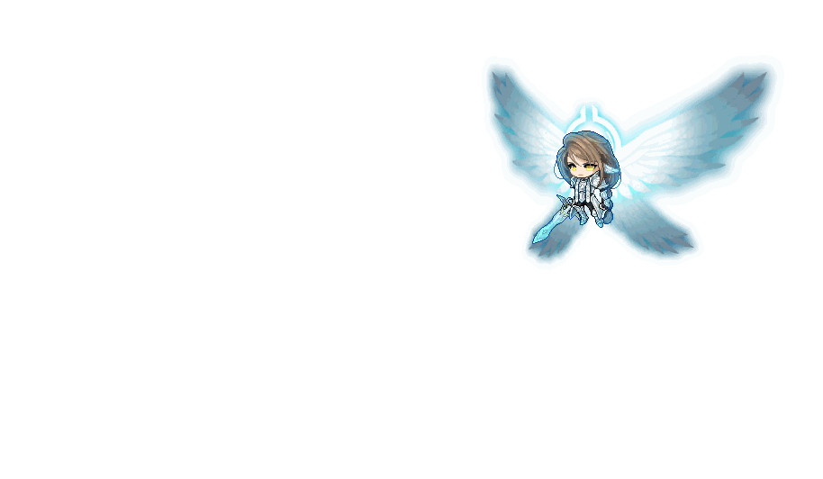

At the end of each phase, multiple Pillars will appear after a delay, dealing 1000% HP damage and increasing your Sun Gauge by a large amount. One of the pillars will be shorter than the other ones, ducking (? need to test) under that one is safe.
Two Spheres (three when Seren has than 33% HP) appear at the top of the map. After a brief delay, the Spheres will each cast a wide laser at a random angle. The lasers cross each other, forming an 'X' shapes, deal 10% HP damage continuously and causes your screen to briefly turn fully white.
Bombs appear at random spots on the ground. After a short delay, the Bombs explide, dealing 35% HP damage and inflicting Blind.
Seren dashes forwards after a short delay, dealing 35% HP damage and inflicting Blind.
Seren stabs her sword after a brief delay, dealing 20% HP damage.
After a short delay, Seren fires 12 lasers around her, dealing 50% HP damage. The lasers are also wider than in P1.
You will constnatly take 1% HP damage every second, and potion healing is reduced by 80%
Pillars will randomly appear on the map, dealing 90% HP damage after a brief delay.
Two walls of fire appear on the left and right of the center of the map. Passing through them deals 50% HP damaage, and inflicts Poison.
Seren dashes forwards after a short delay, dealing 50% HP damage and inflicts Poison.
Seren stabs her sword after a brief delay, dealing 35% HP damage and inflicts Poison.
Seren slashes three separate times. Each hit does 200% HP damage after a short delay. The first two hits are dashes. She will finish all three hits once she starts, even if bound.
Seren summons slow falling Meteors across the entire map. Each Meteor does 40% HP damage and inflicts Seal.
No skills during midnight will fill the Gauge, and the Gauge will gradually deplete.
Pillars will randomly appear on the map, dealing 15% HP damage and inflicting Seal.
Seren dashes forwards after a short delay, dealing 15% HP damage, and causes a super knockback.
Seren stabs her sword after a brief delay, dealing 10% HP damage.
Seren pushes nearby enemies after a brief delay, dealing 20% HP damage and inflicting Blind.
Seren creates a shield around herself, which slowly increases in amount. At the end of Dawn, Seren is healed for the remaining shield amount and the shield disappears.
One deer (increasing up to three as Seren HP gets lower) is summoned that chases players. The deer can attack, dealing 10% HP damage and causing a super knockback.
Seren dashes forwards after a short delay, dealing 30% HP damage and inflicting Slow.
Seren stabs her sword after a brief delay, dealing 15% HP damage and inflicting Slow.
Seren summons a geyser in front of her that slowly moves forward. Every few seconds, the Geyser will erupt, dealing 35% HP damage and causing a super knockback.
A few Bombs will randomly appear across the map and slowly chase players. They will detonate when anyone gets close, exploding after a brief delay, dealing 25% HP damage and inflcting Seal,
Meteors appear at the top of the map randomly and will rapidly fall down after a brief delay, dealing 25% HP damage and inflicting Stun.